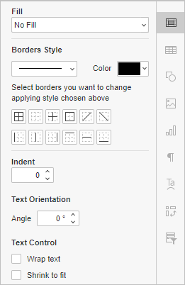

Poravnanje podataka u ćelijama
U Spreadsheet Editor-u možete poravnati podatke horizontalno i vertikalno ili čak rotirati podatke unutar ćelije. Da biste to uradili, izaberite ćeliju ili opseg ćelija pomoću miša ili ceo radni list pritiskom na kombinaciju tastera Ctrl+A. Takođe možete izabrati više nepovezanih ćelija ili opsega ćelija držeći pritisnut taster Ctrl dok birate ćelije/opsege pomoću miša. Zatim izvršite jednu od sledećih operacija koristeći ikonice koje se nalaze na kartici Home na gornjoj traci sa alatkama.
-
Primena jednog od stilova horizontalnog poravnanja podataka unutar ćelije,
- kliknite na ikonu Align left da biste poravnali podatke uz levu stranu ćelije (desna strana ostaje neporavnata);
- kliknite na ikonu Align center da biste poravnali podatke u centru ćelije (leva i desna strana ostaju neporavnate);
- kliknite na ikonu Align right da biste poravnali podatke uz desnu stranu ćelije (leva strana ostaje neporavnata);
- kliknite na ikonu Justified da biste poravnali podatke i uz levu i uz desnu stranu ćelije (dodatni razmaci se dodaju po potrebi kako bi se zadržalo poravnanje).
-
Promena vertikalnog poravnanja podataka unutar ćelije,
- kliknite na ikonu Align top da biste poravnali podatke uz gornju ivicu ćelije;
- kliknite na ikonu Align middle da biste poravnali podatke u sredini ćelije;
- kliknite na ikonu Align bottom da biste poravnali podatke uz donju ivicu ćelije.
-
Promena ugla prikaza podataka unutar ćelije klikom na ikonu Orientation i izborom jedne od sledećih opcija:
- koristite opciju Horizontal Text da biste postavili tekst horizontalno (podrazumevana opcija),
- koristite opciju Angle Counterclockwise da biste postavili tekst od donjeg levog ugla ka gornjem desnom uglu ćelije,
- koristite opciju Angle Clockwise da biste postavili tekst od gornjeg levog ugla ka donjem desnom uglu ćelije,
- koristite opciju Vertical text da biste postavili tekst vertikalno,
- koristite opciju Rotate Text Up da biste postavili tekst od dna ka vrhu ćelije,
- koristite opciju Rotate Text Down da biste postavili tekst od vrha ka dnu ćelije.

-
Uvlačenje teksta unutar ćelije pomoću odeljka Indent na desnoj bočnoj traci Cell Settings. Navedite vrednost (odnosno broj karaktera) za koliko će se sadržaj pomeriti udesno.
Ako promenite orijentaciju teksta, uvlačenja će biti resetovana. Ako promenite uvlačenja za rotirani tekst, orijentacija teksta će biti resetovana. Uvlačenja se mogu podesiti samo ako je izabrana horizontalna ili vertikalna orijentacija teksta.
- Rotiranje teksta pod tačno određenim uglom: kliknite na ikonu Cell settings na desnoj bočnoj traci i koristite opciju Orientation. Unesite potrebnu vrednost u stepenima u polje Angle ili je prilagodite pomoću strelica sa desne strane.
-
Prilagođavanje podataka širini kolone klikom na ikonu Wrap text na kartici Home gornje trake sa alatkama ili označavanjem polja Wrap text na desnoj bočnoj traci.
Ako promenite širinu kolone, prelamanje teksta se automatski prilagođava.
- Prilagođavanje podataka širini ćelije označavanjem polja Shrink to fit na desnoj bočnoj traci. Sadržaj ćelije će biti smanjen do te mere da može da stane u ćeliju.